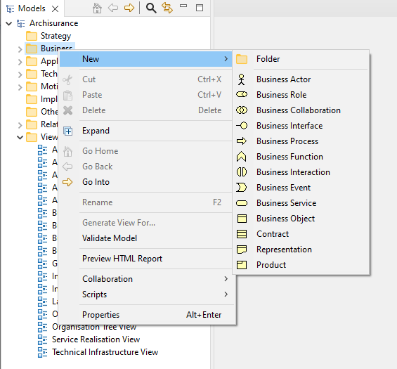

要将新的ArchiMate元素直接添加到模型树，请选择“业务”、“应用程序”、“技术”或“连接器”文件夹之一，然后右键单击。“新建”菜单项允许您向树添加新元素：

将新元素直接添加到模型树
将元素添加到模型树时，焦点将分配给元素，您可以为其提供新的名称。
请注意，无法将关系直接添加到模型树，因为这些关系只能通过在视图（图）编辑器窗口中绘制来添加。
如果您创建了 专用元素 这些将显示在元素列表底部的“新建”右键菜单中，使您可以像任何其他元素一样快速向模型添加专用元素。这可以在以下位置启用或禁用： 首选项.